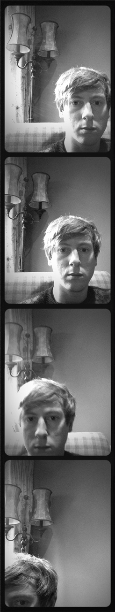

-- Gavin Reid --
.:::Web Development Portfolio:::.
'Sup bros and bro-esses. I'm the hip new tech bro on the scene. Gonna be dumpin' some real whack jazz on these here pages over the next few weeks and months. Stay tooned!
These are some of my projects. Click on an image if you please.

Tribute Page
I followed freeCodeCamp to build a tribute page. Naturally, I took this as an opportunity to write my own obituary.

CSS Skyline
For this freeCodeCamp project, I utilised CSS to create a skyline that changes from day to night, depending on a @media condition

Animated Penguin
I built a waving penguin using CSS transform and animation.
View my profile on GitHub
Contact
To contact me, click here